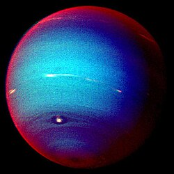

Netuno
Introdução
Netuno é o oitavo e mais distante planeta conhecido do Sol no nosos sistema. Diferente de todos os outros mundos rochosos ou gasosos, a existência de Netuno foi primeiro calculada através de previsões matemáticas por Urbain Le Verrier antes de ser visualmente confirmada em 1846.
Características Físicas
Apresentando uma tonalidade azulada profunda e intensa, Netuno abriga sistemas climáticos extremamente dinâmicos. A sonda Voyager 2 registou na sua superfície a Grande Mancha Escura, uma tempestade do tamanho da Terra com ventos supersónicos que ultrapassam a barreira da velocidade do som.

Atmosfera
A atmosfera é composta principalmente de hidrogénio e hélio, com frações de metano. Os cientistas estimam que, devido à ligeira diferença de composição em comparação com Urano e a fontes de calor internas misteriosas, as suas nuvens gerem os ventos mais velozes do Sistema Solar, alcançando os 2.100 km/h.
Exploração Espacial
Em agosto de 1989, a sonda Voyager 2 realizou o seu último encontro planetário ao sobrevoar o polo norte de Netuno e a sua lua gelada gigante, Tritão. Tritão revelou ser um mundo fascinante que orbita de forma retrógrada e expele nitrogénio líquido através de criovulcões ativos.
Dados Comparativos
- Diâmetro: 49.244 km
- Massa: 17,1 massas terrestres
- Gravidade: 11,15 m/s²
- Dia (Rotação): 16h 6m
- Luas: 16 conhecidas (destacando-se Tritão)
Citação Científica
"Netuno provou que os confins do Sistema Solar não são estáticos e congelados, mas sim palcos de uma meteorologia violenta e misteriosa."